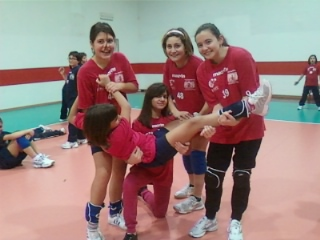
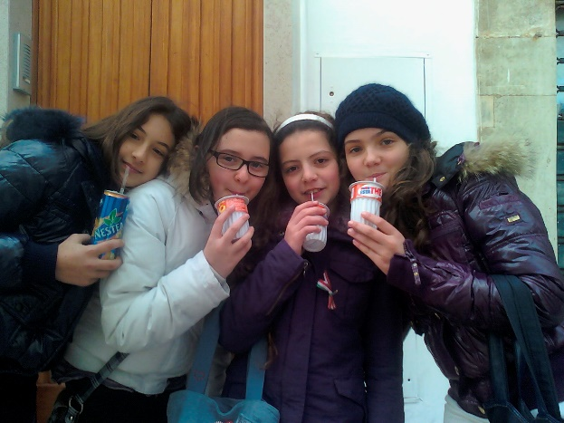
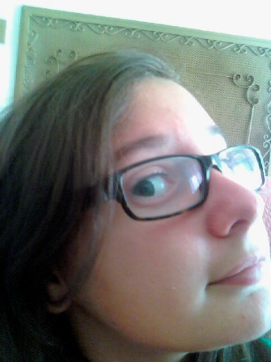
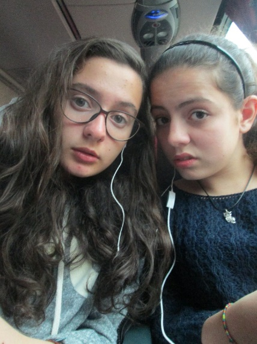
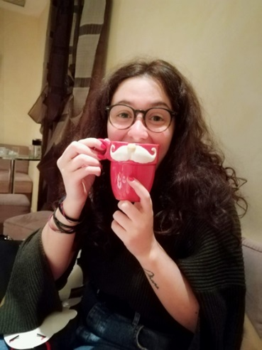
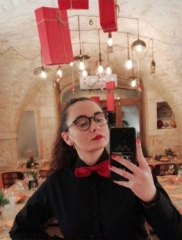
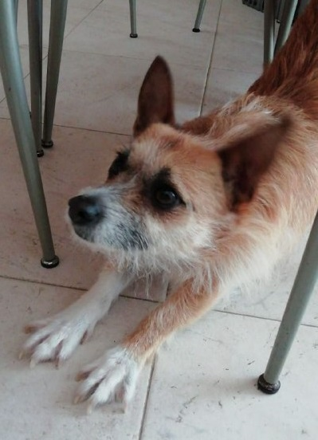

09.06.2010
È finita la scuola, e come compito delle vacanze dovrò scrivere un diario!!! Oggi io e i miei compagni di scuola abbiamo organizzato una festa al centro sociale per festeggiare la fine di questa esperienza. Abbiamo mangiato tanto e ho anche pianto, speriamo di capitare anche alle medie con loro XD
02.09.2010
Le elementari sono finite e fra qualche giorno iniziano le scuole medie, io, Vita e Roby ci stiamo godendo gli ultimi giorni estivi. Sto diventando grande, sono contenta di essere capitata con le mie amiche, speriamo ci siano ragazzi carini üòâ
Le elementari sono finite e fra qualche giorno iniziano le scuole medie, io, Vita e Roby ci stiamo godendo gli ultimi giorni estivi. Sto diventando grande, sono contenta di essere capitata con le mie amiche, speriamo ci siano ragazzi carini üòâ
27.09.2010
Oggi ho detto a papà che ha la pancia, lui mi ha risposto che ha solo le ossa grosse. Poi ha detto che invece io ho la muscolatura grossa. Me la sono un po’ presa però poi pensandoci... guarda quanto sono affascinante! *-*
Oggi ho detto a papà che ha la pancia, lui mi ha risposto che ha solo le ossa grosse. Poi ha detto che invece io ho la muscolatura grossa. Me la sono un po’ presa però poi pensandoci... guarda quanto sono affascinante! *-*
In quest’altra foto c’è anche Denny, lo costringo a fare foto con me. È ancora troppo piccolo per ribellarsi :P
18.03.2011
Oggi è martedì, sono iniziate le belle giornate anche se bisogna ancora mettersi il giubbotto! Ho scovato in casa dei nuovi orecchini e ho pensato di mettermeli... ho fatto bene perché mi stanno da favola. Ho proposto alle mie girls di uscire, hanno accettato di buon grado e io mi sono inventata una nuova acconciatura per far notare gli orecchini!! Ci sono riuscita? Ovvio XP, infatti mi hanno fatto una foto, che io ovviamente non volevo (scherzo mi piace comunque). Eccola qui ☺️
Oggi è martedì, sono iniziate le belle giornate anche se bisogna ancora mettersi il giubbotto! Ho scovato in casa dei nuovi orecchini e ho pensato di mettermeli... ho fatto bene perché mi stanno da favola. Ho proposto alle mie girls di uscire, hanno accettato di buon grado e io mi sono inventata una nuova acconciatura per far notare gli orecchini!! Ci sono riuscita? Ovvio XP, infatti mi hanno fatto una foto, che io ovviamente non volevo (scherzo mi piace comunque). Eccola qui ☺️
19.03.2011
Oggi pomeriggio io e le mie amiche ci siamo viste a casa della nonna di Annalisa per fare un progetto per la scuola. Come al solito però abbiamo cazzeggiato xD! Ci siamo inventate tre nomi diverse per tre diverse scope: Scopina, Scopino e Scopone :D, quanto ci siamo divertite. Ovviamente non c’era nessun riferimento particolare, siamo ancora troppo piccole :P
Oggi pomeriggio io e le mie amiche ci siamo viste a casa della nonna di Annalisa per fare un progetto per la scuola. Come al solito però abbiamo cazzeggiato xD! Ci siamo inventate tre nomi diverse per tre diverse scope: Scopina, Scopino e Scopone :D, quanto ci siamo divertite. Ovviamente non c’era nessun riferimento particolare, siamo ancora troppo piccole :P
30.04.2011
Stiamo facendo un cartellone per la partita di pallavolo per scoraggiare la 2C, speriamo di riuscire a batterli, ci siamo allenati tanto, e io sto asciugando tutto il colore che abbiamo messo sul cartellone, è verde colore vomito.
Stiamo facendo un cartellone per la partita di pallavolo per scoraggiare la 2C, speriamo di riuscire a batterli, ci siamo allenati tanto, e io sto asciugando tutto il colore che abbiamo messo sul cartellone, è verde colore vomito.
04.05.2011
Oggi siamo andati a RULLO DI TAMBURI..... GROTTAGLIE. Top!! Io in pullman mi sono seduta con Saruzz e abbiamo condiviso le cuffie...amiche vere...ascoltiamo la stessa musica e in più amiamo cantare. Eccoti la foto dove ci guardiamo col musetto.. tenere :3
Oggi siamo andati a RULLO DI TAMBURI..... GROTTAGLIE. Top!! Io in pullman mi sono seduta con Saruzz e abbiamo condiviso le cuffie...amiche vere...ascoltiamo la stessa musica e in più amiamo cantare. Eccoti la foto dove ci guardiamo col musetto.. tenere :3
01.05.2011
Oggi √® festa, niente scuola, e io e le mie amike siamo in villa a scattarci foto e a passare questa bella mattinata insieme. Oggi sono particolarmente raggiante, questi occhiali mi rendono molto sexy üòâ
Oggi √® festa, niente scuola, e io e le mie amike siamo in villa a scattarci foto e a passare questa bella mattinata insieme. Oggi sono particolarmente raggiante, questi occhiali mi rendono molto sexy üòâ
03.06.2011
Per la festa dello Sport stiamo preparando un balletto tutte insieme, saremo le migliori !!!
Per la festa dello Sport stiamo preparando un balletto tutte insieme, saremo le migliori !!!
05.06.2011
Oggi è la giornata dello Sport, e dopo aver fatto il nostro balletto Serinelli mi sta dando il premio per l’estemporanea che quest’anno ho vinto. Tra un po’ inizieranno i gavettoni, non vedo l’ora!!!
Oggi è la giornata dello Sport, e dopo aver fatto il nostro balletto Serinelli mi sta dando il premio per l’estemporanea che quest’anno ho vinto. Tra un po’ inizieranno i gavettoni, non vedo l’ora!!!
19.06.2011
E’ finalmente finita la scuola e io e le mie girls siamo in villa a farci selfie, e a goderci questo bellissimo sole.
E’ finalmente finita la scuola e io e le mie girls siamo in villa a farci selfie, e a goderci questo bellissimo sole.
18.07.2011
Oggi io e Roby siamo andati a Rossano Calabro e io ho una fame da lupi, mi divorerei qualsiasi cosa!
Oggi io e Roby siamo andati a Rossano Calabro e io ho una fame da lupi, mi divorerei qualsiasi cosa!
19.07.2011
Siamo al Sogno e io e Vita stiamo ballando bomba davanti a tutti, Vita si vergogna ma io sono bravissima in questo ballo, quindi sfoggio la mia bravura senza alcun problema XD
Siamo al Sogno e io e Vita stiamo ballando bomba davanti a tutti, Vita si vergogna ma io sono bravissima in questo ballo, quindi sfoggio la mia bravura senza alcun problema XD
23.09.2011
Lo ammetto, sono io l’inventrice dei selfie!!!
Lo ammetto, sono io l’inventrice dei selfie!!!
18.10.2011
Un altro giorno al parco, io e Roby stiamo facendo le sceme, non fa ancora freddo e per questo stiamo uscendo. Speriamo che domani Potenza non ci interroghi in matematica.
Un altro giorno al parco, io e Roby stiamo facendo le sceme, non fa ancora freddo e per questo stiamo uscendo. Speriamo che domani Potenza non ci interroghi in matematica.
01.03.2012
Abbiamo scoperto un programma bellissimo su Internet. Si chiama webcam toy. Io e Sara ora passiamo tutte le giornate a farci le foto con gli effetti che ci sono... divertentissimi, poi salviamo le foto e io le pubblico su fb.. ce ne inventiamo di tutti i colori... 4ever
Abbiamo scoperto un programma bellissimo su Internet. Si chiama webcam toy. Io e Sara ora passiamo tutte le giornate a farci le foto con gli effetti che ci sono... divertentissimi, poi salviamo le foto e io le pubblico su fb.. ce ne inventiamo di tutti i colori... 4ever
07.03.2012
Diario... io e sara ci siamo fatte una foto con i cuoricini dell’Anteas e ho imparato una cosa..non aggiungo altro, metto direttamente la foto ;) semplicemente....NOI
Diario... io e sara ci siamo fatte una foto con i cuoricini dell’Anteas e ho imparato una cosa..non aggiungo altro, metto direttamente la foto ;) semplicemente....NOI
28.03.2012
Io e l’amore della mia vita che stavamo passeggiando in gita, vorrei tanto prendergli la mano ma poi tutti scoprirebbero la mia cotta !!
Io e l’amore della mia vita che stavamo passeggiando in gita, vorrei tanto prendergli la mano ma poi tutti scoprirebbero la mia cotta !!

10.04.2012
Oggi abbiamo avuto la partita di pallavolo e abbiamo vinto, Forza Locorotondo!!!
Oggi abbiamo avuto la partita di pallavolo e abbiamo vinto, Forza Locorotondo!!!
18.04.2012
Ci stiamo preparando al match più importante delle nostre vite..la partita di pallavolo delle terze medie. La mia 3B l’ha presa molto seriamente, infatti ci vediamo ogni pome da Lino Calella, e giochiamo. Ci stiamo impegnando tanto... io sono una stella mancata della pallavolo, sono ancora fortissima, infatti vinceremo grazie a me. Nelle pause si fanno le fotooooooooooooo, oggi nuova posa (così sembra che ho un po’ di culo).
Ci stiamo preparando al match più importante delle nostre vite..la partita di pallavolo delle terze medie. La mia 3B l’ha presa molto seriamente, infatti ci vediamo ogni pome da Lino Calella, e giochiamo. Ci stiamo impegnando tanto... io sono una stella mancata della pallavolo, sono ancora fortissima, infatti vinceremo grazie a me. Nelle pause si fanno le fotooooooooooooo, oggi nuova posa (così sembra che ho un po’ di culo).
21.05.2012
Federica Cito si è comprata la macchina fotografica che io vorrei...che invidia. E’ un’ ingiustizia saper fare benissimo le foto ma non avere una macchina fotografica buona... Canon, ti sogno ad occhi aperti. Guarda che foto mozzafiato mia e di sara.. grazie Fè, sei brava tvukdb (anche se io l’avrei fatta meglio) ❤️
Federica Cito si è comprata la macchina fotografica che io vorrei...che invidia. E’ un’ ingiustizia saper fare benissimo le foto ma non avere una macchina fotografica buona... Canon, ti sogno ad occhi aperti. Guarda che foto mozzafiato mia e di sara.. grazie Fè, sei brava tvukdb (anche se io l’avrei fatta meglio) ❤️
11.07.2012
Come ogni estatee...Appuntamento a casa di Robi per la giornata gavettoni. La giornata più attesa di sempre, ci divertiamo un sacco. Mangiamo insieme, riempiamo i gavettoni e poi ce li lanciamo. E intanto, ovviamente, facciamo le foto ;). Troppo bello... abbiamo fatto la caricatura di NOI SAPPIAMO CHI hahahahahahah mossista..., ci siamo fatte le foto sui trulli al tramonto e poi la sera abbiamo guardato le stelle. Insieme per sempre amiche mie..
Come ogni estatee...Appuntamento a casa di Robi per la giornata gavettoni. La giornata più attesa di sempre, ci divertiamo un sacco. Mangiamo insieme, riempiamo i gavettoni e poi ce li lanciamo. E intanto, ovviamente, facciamo le foto ;). Troppo bello... abbiamo fatto la caricatura di NOI SAPPIAMO CHI hahahahahahah mossista..., ci siamo fatte le foto sui trulli al tramonto e poi la sera abbiamo guardato le stelle. Insieme per sempre amiche mie..
18.06.2012
Scuola finisce e... inizia la stagione dell’amore caro diario. Penso a farmi bella con l’abbronzatura e mi faccio scattare le foto da mettere su Fb... dita incrociate per i like!!!

Scuola finisce e... inizia la stagione dell’amore caro diario. Penso a farmi bella con l’abbronzatura e mi faccio scattare le foto da mettere su Fb... dita incrociate per i like!!!
23.06.2012
Oggi con la family siamo in viaggio per andare in Calabria al matrimonio del cugino di mamma. Il mio vestito è proprio carino, spero che mi facciano i complimenti. Sono veramente felice di rivedere i miei cugini e zii... ah e poi si mangia tanto!!! Ora torno a sentire Demi Lovato in attesa di arrivare *-*
Oggi con la family siamo in viaggio per andare in Calabria al matrimonio del cugino di mamma. Il mio vestito è proprio carino, spero che mi facciano i complimenti. Sono veramente felice di rivedere i miei cugini e zii... ah e poi si mangia tanto!!! Ora torno a sentire Demi Lovato in attesa di arrivare *-*
24.06.2012
Te l’avevo detto che sarei stata bellissima! Qui sono con Kevin e Kikka, un fotografo si è avvicinato al tavolo per fotografarci. Menomale che non mi ha preso mentre masticavo xD
Te l’avevo detto che sarei stata bellissima! Qui sono con Kevin e Kikka, un fotografo si è avvicinato al tavolo per fotografarci. Menomale che non mi ha preso mentre masticavo xD
02.08.2012
ESTATEEEEEEEEEEEEEEE... che meraviglia. Oggi mare con Saruzz la sua famiglia e amici di famiglia... bellissimo. Prendo un po’ di sole perché sono veramente molto bianca... tranne per il mio naso -.-. Intanto passo il tempo con Sara... la mia salvezza.
ESTATEEEEEEEEEEEEEEE... che meraviglia. Oggi mare con Saruzz la sua famiglia e amici di famiglia... bellissimo. Prendo un po’ di sole perché sono veramente molto bianca... tranne per il mio naso -.-. Intanto passo il tempo con Sara... la mia salvezza.
17.08.2012
Ormai siamo ragazzine e la sera si esce fino a tardi. Oggi concertone alla chiesa Greca, ci siamo io e le mie amiche che abbiamo il posto d’onore ;) le scale di casa di Sara. Ci siamo scattate una foto.. stiamo benissimo e che casino c’era... che figura di merda cmq, abbiamo lasciato il flash acceso ci hanno viste tutti.
Ormai siamo ragazzine e la sera si esce fino a tardi. Oggi concertone alla chiesa Greca, ci siamo io e le mie amiche che abbiamo il posto d’onore ;) le scale di casa di Sara. Ci siamo scattate una foto.. stiamo benissimo e che casino c’era... che figura di merda cmq, abbiamo lasciato il flash acceso ci hanno viste tutti.
01.09.2012
Pensando a lui...
Pensando a lui...
26.10.2011
Oggi caro diario sono un po’ triste… Ma come dice la mia amata Katy Perry: after the hurricane comes a rainbow!
Oggi caro diario sono un po’ triste… Ma come dice la mia amata Katy Perry: after the hurricane comes a rainbow!
06.11.2012
Pomeriggio divertentissimo. Sono andata a casa di Saruzz per consolarla perch√© era un po‚Äô triste e l‚Äôho fatta ridere tantissimo, infatti quando poi si √® ripresa abbiamo approfittato e ci siamo fatte‚Ķindovina cosa‚Ķ.FOTO!! Che restino tra noi, caro diario, perch√© in alcune faccio schifo üòû
Pomeriggio divertentissimo. Sono andata a casa di Saruzz per consolarla perch√© era un po‚Äô triste e l‚Äôho fatta ridere tantissimo, infatti quando poi si √® ripresa abbiamo approfittato e ci siamo fatte‚Ķindovina cosa‚Ķ.FOTO!! Che restino tra noi, caro diario, perch√© in alcune faccio schifo üòû
30.01.2013
Oggi piccola trasgressione a scuola… anche se ho messo la foto su Fb speriamo non se ne accorga nessun prof. Ci siamo fatte una foto agli specchi dello spogliatoio in palestra. Al massimo se ci sgamano diremo che siamo troppo belle, sicuramente ci perdoneranno.
Oggi piccola trasgressione a scuola… anche se ho messo la foto su Fb speriamo non se ne accorga nessun prof. Ci siamo fatte una foto agli specchi dello spogliatoio in palestra. Al massimo se ci sgamano diremo che siamo troppo belle, sicuramente ci perdoneranno.
25.02.2013
Oggi niente scuola, yeah. Io, Sara, Vita e Annalisa siamo uscite e abbiamo passato la mattina al parco, dove stiamo sempre. Siamo una delle comitive più fighe, e questo è solo perché faccio delle foto meravigliose. Oggi sono stata creativa, ho proposto alle girls di creare con i nostri corpi la parola Love, ci è venuta benissimo. Farà un sacco di likes.
Oggi niente scuola, yeah. Io, Sara, Vita e Annalisa siamo uscite e abbiamo passato la mattina al parco, dove stiamo sempre. Siamo una delle comitive più fighe, e questo è solo perché faccio delle foto meravigliose. Oggi sono stata creativa, ho proposto alle girls di creare con i nostri corpi la parola Love, ci è venuta benissimo. Farà un sacco di likes.
AH, quasi dimenticavo... con noi c’erano alcuni nostri amici maschi… Stefano (professoressa lo so io, dove??? In bagno, aahahahahahah solo noi possiamo capire: vivi, nali, robi, sa) e altri.. e siccome c’era una bella luce io mi sono fatta una foto da sola per far vedere che belli i miei occhi *--*
15.03.2013
Ragazzi, marzo è il mese dei compleanni delle persone migliori: io, Vivi, e Nalì. Lisa è la prima a compiere gli anni, poi Vita e poi io. Oggi abbiamo festeggiato Nalì… ho messo un vestito nuovo e degli stivali fighissimi. Li ho sfoggiati fiera e onestamente penso di aver fatto colpo. Mi hanno fatto una foto e l’ho pubblicata su Instagram, la descrizione è questa “Saranno i sorrisi degli altri quelli che non ti aspetti a non farti sentire i tuoi difetti”.
Ragazzi, marzo è il mese dei compleanni delle persone migliori: io, Vivi, e Nalì. Lisa è la prima a compiere gli anni, poi Vita e poi io. Oggi abbiamo festeggiato Nalì… ho messo un vestito nuovo e degli stivali fighissimi. Li ho sfoggiati fiera e onestamente penso di aver fatto colpo. Mi hanno fatto una foto e l’ho pubblicata su Instagram, la descrizione è questa “Saranno i sorrisi degli altri quelli che non ti aspetti a non farti sentire i tuoi difetti”.
23.08.2014
Carissimo diario mio che spero non legga mai nessuno altrimenti sono fritta :P, oggi ti racconto un episodio che mi è venuto in mente guardando vecchie foto… allora, ho visto la foto di io e le raga che beviamo il thè ovviamente alla pesca ;) eccola:
Carissimo diario mio che spero non legga mai nessuno altrimenti sono fritta :P, oggi ti racconto un episodio che mi è venuto in mente guardando vecchie foto… allora, ho visto la foto di io e le raga che beviamo il thè ovviamente alla pesca ;) eccola:

Che guanciotte avevo :33. Cmq dicevo… mi sono ricordata di una cosa. Praticamente la mia amica sara è un albanese. Anche se non sembra, guardala...
...io ho visto una mia foto in acqua, nella piscina più bella del mondo “IL SOGNO”
Scusa se faccio troppi giri di parole ma sono così… dolcemente complicata… e insomma guardando l’acqua ho pensato a quella volta in cui, molto seriamente chiesi a saruzz se in Albania si andasse con i barconi :D io sinceramente non la volevo offendere… ero (e sono ;)) curiosa… tutto qui… ora ti faccio vedere i miei occhi curiosi

Io ero proprio seria...
lei rise tanto perché credeva scherzassi però poi mi ha detto che si va col traghetto (E MENOMALE). Io ho reagito un po’ in questo modo (ci tengo a farti vedere questa foto perché ho addosso un bellissimo souvenir del’umbria xD da ridere l’Hard ROCK Cascate delle marmore :D). Chiudo cosi.. CIAOOOOO
lei rise tanto perché credeva scherzassi però poi mi ha detto che si va col traghetto (E MENOMALE). Io ho reagito un po’ in questo modo (ci tengo a farti vedere questa foto perché ho addosso un bellissimo souvenir del’umbria xD da ridere l’Hard ROCK Cascate delle marmore :D). Chiudo cosi.. CIAOOOOO

26.03.2013
Diario mio… che foto speciali ti mostro oggi. Mi viene da piangere solo se ci penso… questo è l’ultimo anno con le mie migliori amiche e siamo partite per la nostra ultima gita. Siamo in Umbria e ci stiamo divertendo da morire. Io mi addormento sempre per prima perché mi stanco molto. Prima di addormentarmi però rido tanto perché Vita ha paura della finestra aperta, e vuole la luce accesa, che cretine siamo xD. Abbiamo fatto talmente tanto casino che è venuta a bussare la Del Genio… che figura di merda!! Abbiamo costretto Sara ad andare ad aprire la porta perché aveva il pigiama più bello.
Diario mio… che foto speciali ti mostro oggi. Mi viene da piangere solo se ci penso… questo è l’ultimo anno con le mie migliori amiche e siamo partite per la nostra ultima gita. Siamo in Umbria e ci stiamo divertendo da morire. Io mi addormento sempre per prima perché mi stanco molto. Prima di addormentarmi però rido tanto perché Vita ha paura della finestra aperta, e vuole la luce accesa, che cretine siamo xD. Abbiamo fatto talmente tanto casino che è venuta a bussare la Del Genio… che figura di merda!! Abbiamo costretto Sara ad andare ad aprire la porta perché aveva il pigiama più bello.
Una delle cose più belle che ci è successa è stata vedere Christian Convertini senza maglietta in corridoio :Q_________ che figo. La prima sera Simone piangeva e voleva la madre perché Romanazzo lo ha fatto cadere a terra… è venuto al nostro tavolo durante la cena… che figura pure questa. Comunque ci stiamo ammazzando di risate… troppo bello. Vorrei non finisse mai…
15.05.2013
Oggi abbiamo fatto la prima gara di atletica e sono molto felice perché sono arrivata primaaa. È una giornata fantastica, soleggiata e fa molto caldo.
Oggi abbiamo fatto la prima gara di atletica e sono molto felice perché sono arrivata primaaa. È una giornata fantastica, soleggiata e fa molto caldo.
06.06.2013
Ultimi giorni di scuola…ANSIAAAAAAAA: gli esami sono vicini. Però cazzeggiamo quando possiamo… oggi nel lab di informatica abbiamo riso troppo… ho provato gli occhiali di Endri. Guarda come mi stanno bene ;D
Ultimi giorni di scuola…ANSIAAAAAAAA: gli esami sono vicini. Però cazzeggiamo quando possiamo… oggi nel lab di informatica abbiamo riso troppo… ho provato gli occhiali di Endri. Guarda come mi stanno bene ;D
21.06.2013
Mancano pochi giorni agli esami di Terza media e io, mio fratello e i miei amici siamo al parco a riposarci un pochino. Ezio ha preso Danny in braccio e io lo sto rincorrendo ancora Ezio lo lascia per terra -.-‘
Mancano pochi giorni agli esami di Terza media e io, mio fratello e i miei amici siamo al parco a riposarci un pochino. Ezio ha preso Danny in braccio e io lo sto rincorrendo ancora Ezio lo lascia per terra -.-‘
02.07.2013
Oggi come ogni settimana sono venuta qui con le mie amiche del cuore al Sogno, ormai è diventato il posto delle nostre fantastiche estati xD, ovviamente questo viene dopo al fantastico pomeriggio passato a casa di Roby all'insegna di gavettoni. In questa foto cerchiamo di fare le trasgressive o le fighe in realtà non so cosa siamo per davvero, forse siamo paxe... Spero solo di non diventare rossa o quasi bruciata come sempre... xD
Oggi come ogni settimana sono venuta qui con le mie amiche del cuore al Sogno, ormai è diventato il posto delle nostre fantastiche estati xD, ovviamente questo viene dopo al fantastico pomeriggio passato a casa di Roby all'insegna di gavettoni. In questa foto cerchiamo di fare le trasgressive o le fighe in realtà non so cosa siamo per davvero, forse siamo paxe... Spero solo di non diventare rossa o quasi bruciata come sempre... xD
04.07.2013
Oggi bellissima giornata in piscina al Sogno.. indescrivibile il divertimento. Ovviamente ci siamo fatti tante foto insieme, memorabile. L’unico problema è che ci tocca metterci la cuffia… vabbè, almeno fuori dall’acqua la possiamo togliere.
Oggi bellissima giornata in piscina al Sogno.. indescrivibile il divertimento. Ovviamente ci siamo fatti tante foto insieme, memorabile. L’unico problema è che ci tocca metterci la cuffia… vabbè, almeno fuori dall’acqua la possiamo togliere.
16.03.2014
Sono andata a casa di lisa e abbiamo deciso di farci le foto sul suo terrazzo, quindi mi ha dato un po' una sistemata a questi capelli e mi ha anche truccato un po', lei è l'esperta. Mi ha anche prestato una sua camicia e per la prima volta mi sono messa dall'altra parte dell'obbiettivo, ma non ne sono capace, per niente, infatti all'inizio sono solo stata capace di fare la stupida e imitare le pose di annalisa. Alla fine qualche foto spontanea è uscita, ma mi sento molto più a mio agio dall'altra parte...
Sono andata a casa di lisa e abbiamo deciso di farci le foto sul suo terrazzo, quindi mi ha dato un po' una sistemata a questi capelli e mi ha anche truccato un po', lei è l'esperta. Mi ha anche prestato una sua camicia e per la prima volta mi sono messa dall'altra parte dell'obbiettivo, ma non ne sono capace, per niente, infatti all'inizio sono solo stata capace di fare la stupida e imitare le pose di annalisa. Alla fine qualche foto spontanea è uscita, ma mi sento molto più a mio agio dall'altra parte...
23.03.2014
Si avvicina un giorno importante… la Cresima. Sono felice anche perché so già che riceverò la mia CANON però nel frattempo mi alleno con le foto. Oggi per esempio siamo andate a fare il ritiro spiriturale… il gruppo di catechismo ci ha chiamate Selfies per quante foto ci siamo fatte io e le mie girls… guarda un po’
Si avvicina un giorno importante… la Cresima. Sono felice anche perché so già che riceverò la mia CANON però nel frattempo mi alleno con le foto. Oggi per esempio siamo andate a fare il ritiro spiriturale… il gruppo di catechismo ci ha chiamate Selfies per quante foto ci siamo fatte io e le mie girls… guarda un po’
30.03.2014
Oggi siamo nella nostra amata villa e inauguriamo le nostre macchine fotografiche nuove, ieri ci siamo cresimate e finalmente abbiamo ricevuto le nostre macchine. io ovviamente ho la macchina migliore e del colore più figo, e ho anche l'obbiettivo più grande, ma questo non importa, siamo così tanto felici da voler riempire la memoria in un solo giorno
Oggi siamo nella nostra amata villa e inauguriamo le nostre macchine fotografiche nuove, ieri ci siamo cresimate e finalmente abbiamo ricevuto le nostre macchine. io ovviamente ho la macchina migliore e del colore più figo, e ho anche l'obbiettivo più grande, ma questo non importa, siamo così tanto felici da voler riempire la memoria in un solo giorno
31.03.2014
HAPPY BIRTHDAY TO.............................ME.
ANTEAS RULES
HAPPY BIRTHDAY TO.............................ME.
ANTEAS RULES
21.04.2014
Natale con i tuoi…pasquetta con chi vuoi!!!!!!!!!! :D e io l’ho fatta con le mie amiche a PAPPACIDD , il bosco di Locorotondo, la mia città. Cmq è stata una pasquetta alternativa… mi sono allenata xD
Natale con i tuoi…pasquetta con chi vuoi!!!!!!!!!! :D e io l’ho fatta con le mie amiche a PAPPACIDD , il bosco di Locorotondo, la mia città. Cmq è stata una pasquetta alternativa… mi sono allenata xD
01.05.2014
Oggi siamo andate tutte a casa di lisa, era da un po' che non ci vedevamo tutte quante insieme, è stato molto bello e tutto ciò mi mancava, allora abbiamo deciso di farci una foto nel posto segreto dove lisa si spara le sue pose
Oggi siamo andate tutte a casa di lisa, era da un po' che non ci vedevamo tutte quante insieme, è stato molto bello e tutto ciò mi mancava, allora abbiamo deciso di farci una foto nel posto segreto dove lisa si spara le sue pose
26.6.2014
Stasera party da Robi… ci siamo fatte sexy. E io con lamiapersona con cui condivido una grande passione ho fatto un’esibizione da paura… davantii a tutti. STUPENDO
I trulli di Robi sono davvero tanto fighi, come anche i suoi amici nuovi, stasera li stiamo conoscendo tutti e stiamo ballando come matte, c'è anche il dj, finalmente posso scatenarmi un pò
Stasera party da Robi… ci siamo fatte sexy. E io con lamiapersona con cui condivido una grande passione ho fatto un’esibizione da paura… davantii a tutti. STUPENDO
I trulli di Robi sono davvero tanto fighi, come anche i suoi amici nuovi, stasera li stiamo conoscendo tutti e stiamo ballando come matte, c'è anche il dj, finalmente posso scatenarmi un pò
06.04.2015
Per Pasquetta abbiamo deciso di stare a casa di Annalisa ad Acchino e ci stiamo dilettando a cucinare mentre i ragazzi come al solito stanno giocando alla play. Speriamo che non passino tutto il giorno così
Per Pasquetta abbiamo deciso di stare a casa di Annalisa ad Acchino e ci stiamo dilettando a cucinare mentre i ragazzi come al solito stanno giocando alla play. Speriamo che non passino tutto il giorno così
28.08.2015
L’estate sta finendo ma Annalisa ha organizzato una festa in campagna sua per riunirci tutti insieme. Ci siamo proprio tutti sia il nostro gruppo solito (Angelo, Laci, Antonio Demi, Ezio…) ma anche la comitiva del 2000. Ci stiamo divertendo tanto.
L’estate sta finendo ma Annalisa ha organizzato una festa in campagna sua per riunirci tutti insieme. Ci siamo proprio tutti sia il nostro gruppo solito (Angelo, Laci, Antonio Demi, Ezio…) ma anche la comitiva del 2000. Ci stiamo divertendo tanto.
04.09.2015
Mi sa che il caldo ci sta dando alla testa, ma ho sempre la passione per i selfie e volevo provare la fotocamera del computer di Kikka üòâ
Mi sa che il caldo ci sta dando alla testa, ma ho sempre la passione per i selfie e volevo provare la fotocamera del computer di Kikka üòâ
30.12.2015
Siamo pronte per un fantastico pomeriggio insieme, yeeee!!! XD
Ma sopratutto io con i miei fantastici capelli lisci, che mi ha fatto Annalisa, sono pronta per domani sera perché si festeggiaaa Capodannooooo *_*
Siamo pronte per un fantastico pomeriggio insieme, yeeee!!! XD
Ma sopratutto io con i miei fantastici capelli lisci, che mi ha fatto Annalisa, sono pronta per domani sera perché si festeggiaaa Capodannooooo *_*
01.02.2017
Caro diario, da oggi c’è una new entry in casa… La verità è che ci manca troppo Kikka, in più abbiamo scoperto che questa cucciolina cercava casa. Convincere mamma è stata un po’ dura, io e papà invece ci siamo subito innamorati! Guarda che teneraaaaaa
Caro diario, da oggi c’è una new entry in casa… La verità è che ci manca troppo Kikka, in più abbiamo scoperto che questa cucciolina cercava casa. Convincere mamma è stata un po’ dura, io e papà invece ci siamo subito innamorati! Guarda che teneraaaaaa
…aspè, ma se fa la cacca devo raccoglierla io poi?
21.03.2017
Hi guys, we’ve just arrived at the Disney store in Via Sparano. Questo è il paradiso terrestre, è davvero il paradiso terrestre! Oggi sono riuscita a trovare il vestito per i miei 18 anni: chissà se assomiglierò ad una principessa Disney (ammettetelo, il vestito di Belle è super-wow!)…anche se tutti sanno che Stitch ed io siamo la stessa cosa. “Stitch no cattivo, Stitch coccoloso”!!
Hi guys, we’ve just arrived at the Disney store in Via Sparano. Questo è il paradiso terrestre, è davvero il paradiso terrestre! Oggi sono riuscita a trovare il vestito per i miei 18 anni: chissà se assomiglierò ad una principessa Disney (ammettetelo, il vestito di Belle è super-wow!)…anche se tutti sanno che Stitch ed io siamo la stessa cosa. “Stitch no cattivo, Stitch coccoloso”!!

04.11.2017
Diario mio.. siamo cresciute tanto e grazie al compleanno di Roberta ci siamo riviste e abbiamo passato tempo insieme… è stato divertente vederci da piccole nel video… eravamo tutte delle truzze. Solo una cosa è rimasta la stessa, io sono la più brava a fare le foto. Anche se devo sempre chiedere il PH.
Diario mio.. siamo cresciute tanto e grazie al compleanno di Roberta ci siamo riviste e abbiamo passato tempo insieme… è stato divertente vederci da piccole nel video… eravamo tutte delle truzze. Solo una cosa è rimasta la stessa, io sono la più brava a fare le foto. Anche se devo sempre chiedere il PH.
13.12.2017
Caro diario, questo è il giorno in cui rubai il fantastico (I Know) cappello di Elisa. "Rubai", che sciocca, intendevo "in cui Elisa mi prestó il suo cappello" perché lei è una persona così gentile e altruista. Devi sapere che mi sopporta da ben 7 anni. Come faccia? É un mistero. Anzi, penso che dovrei più volte abbraciarla e dirle "Grazie", "Ti voglio bene", "La convivenza con te è fantastica". Cosa che, come tu ben sai, preferirei morire piuttosto che farla. Però nonostante ciò, Elisa adora me (le mie focacce), la gioia che emano di prima mattina alle luci dell'alba (pasta, patate e pancetta) e la mia voglia di stare in mezzo alla gente (patate al forno). Sono, o no, una persona fantastica?
Caro diario, questo è il giorno in cui rubai il fantastico (I Know) cappello di Elisa. "Rubai", che sciocca, intendevo "in cui Elisa mi prestó il suo cappello" perché lei è una persona così gentile e altruista. Devi sapere che mi sopporta da ben 7 anni. Come faccia? É un mistero. Anzi, penso che dovrei più volte abbraciarla e dirle "Grazie", "Ti voglio bene", "La convivenza con te è fantastica". Cosa che, come tu ben sai, preferirei morire piuttosto che farla. Però nonostante ciò, Elisa adora me (le mie focacce), la gioia che emano di prima mattina alle luci dell'alba (pasta, patate e pancetta) e la mia voglia di stare in mezzo alla gente (patate al forno). Sono, o no, una persona fantastica?
02.03.2018
Diario, mi sembrava soltanto giusto farti vedere che ho dei capelli fantastici anche quando li asciugo lisci. E GUARDA COME SONO LUNGHI!
Diario, mi sembrava soltanto giusto farti vedere che ho dei capelli fantastici anche quando li asciugo lisci. E GUARDA COME SONO LUNGHI!

31.03.2018
Oggi è il mio compleanno e ho passato buona parte del tempo in macchina perché stiamo andando a Roma. Ad ogni fermata io e Kikka ci siamo fatte una foto e lei per prendermi in giro le chiamava “le tappe della via Crucis”. Mamma all’inizio non era molto contenta delle nostre battute, ma poi si è abituata e rideva con noi ahahah
Guarda cos’ho trovato in un autogrill!! Peccato che sono povera, altrimenti li avrei comprati tutti. Autoregalo da me per me ahahah mamma mia come sono simpatica!
Oggi è il mio compleanno e ho passato buona parte del tempo in macchina perché stiamo andando a Roma. Ad ogni fermata io e Kikka ci siamo fatte una foto e lei per prendermi in giro le chiamava “le tappe della via Crucis”. Mamma all’inizio non era molto contenta delle nostre battute, ma poi si è abituata e rideva con noi ahahah
Guarda cos’ho trovato in un autogrill!! Peccato che sono povera, altrimenti li avrei comprati tutti. Autoregalo da me per me ahahah mamma mia come sono simpatica!
Arrivata da nonno ho dimenticato la stanchezza del viaggio. Non serve che io ti spieghi il perché, basterà questa foto storta a spiegarlo.
Nota per me stessa: devo imparare meglio ad aprire lo spumante.
Nota per me stessa: devo imparare meglio ad aprire lo spumante.
13.07.2018
Dopo aver girato due ore per trovare un parcheggio improponibile (grazie Gino, non ricordo esattamente il tuo nome ma senza la tua attenta sorveglianza, non avremmo più ritrovato la macchina al ritorno), aver fatto imparare a Francesca “Per uno come me” e aver PURE sopportato che chi era arrivato da 5 minuti avesse il via libera prima di noi (mi sono messa i tappi delle bottiglie nel reggiseno per nulla)…finalmente eccoci sotto il palco (più o meno). Menomale che ci sono io a fare le foto così ricorderemo questa giornata super fantastica.
Dopo aver girato due ore per trovare un parcheggio improponibile (grazie Gino, non ricordo esattamente il tuo nome ma senza la tua attenta sorveglianza, non avremmo più ritrovato la macchina al ritorno), aver fatto imparare a Francesca “Per uno come me” e aver PURE sopportato che chi era arrivato da 5 minuti avesse il via libera prima di noi (mi sono messa i tappi delle bottiglie nel reggiseno per nulla)…finalmente eccoci sotto il palco (più o meno). Menomale che ci sono io a fare le foto così ricorderemo questa giornata super fantastica.
12.08.2018
Finalmente ho capito come si CAMPA, ho imparato a lavorare e ad essere sfruttata dai miei datori di lavoro ogni volta che tocco il suolo del mio paesello
P.S. se ammicco agli uomini di mezza età mi lasciano dei soldi che chiamano "mancia"
Finalmente ho capito come si CAMPA, ho imparato a lavorare e ad essere sfruttata dai miei datori di lavoro ogni volta che tocco il suolo del mio paesello
P.S. se ammicco agli uomini di mezza età mi lasciano dei soldi che chiamano "mancia"
05.09.2018
Come ben sai tra un po’ dovrò trasferirmi a Trento per l’università. Sono ancora sotto shock perché Kikka mi ha detto che non si usa il diario, boh vabbè. Intanto però ho trovato lo zaino perfetto
Come ben sai tra un po’ dovrò trasferirmi a Trento per l’università. Sono ancora sotto shock perché Kikka mi ha detto che non si usa il diario, boh vabbè. Intanto però ho trovato lo zaino perfetto
17.11.2018
Oggi dopo tanti tentativi e dopo tanto esercizio, alla veneranda età di 19 anni, sono riuscita a fare la pernacchia! Allego foto come testimonianza
Oggi dopo tanti tentativi e dopo tanto esercizio, alla veneranda età di 19 anni, sono riuscita a fare la pernacchia! Allego foto come testimonianza
25.12.2018
Hanno fatto il film di Mary Poppins! Ovviamente io, fan numero 1, non potevo di certo non vederlo. Quiiiindi siamo andati con la family al multisala a Casamassima. I maschi però sono andati a vedere un altro film, come al solito non capiscono niente.
Guarda quanti pop corn abbiamo mangiato!
Hanno fatto il film di Mary Poppins! Ovviamente io, fan numero 1, non potevo di certo non vederlo. Quiiiindi siamo andati con la family al multisala a Casamassima. I maschi però sono andati a vedere un altro film, come al solito non capiscono niente.
Guarda quanti pop corn abbiamo mangiato!
23.03.2019
Diario sappi che l’università è una passeggiata… nel senso letterale eh, hahahahah. Sono diventata simpatica negli anni e oggi sono a Modena da Mario con Sara. Che triangolo..!! Bella Modena mi sta piacendo ma stiamo camminando troppo. Poi nel parco ci sono le galline… bho Trento è molto meglio.
Diario sappi che l’università è una passeggiata… nel senso letterale eh, hahahahah. Sono diventata simpatica negli anni e oggi sono a Modena da Mario con Sara. Che triangolo..!! Bella Modena mi sta piacendo ma stiamo camminando troppo. Poi nel parco ci sono le galline… bho Trento è molto meglio.


24.03.2019
Parma. Francesca non se lo aspettava proprio quando le ho detto di aprirmi perché ero sotto casa sua, che amica super carrrrrrrina che sono! Adesso torno a scegliere un posto da cui ordinare il pranzo…
Parma. Francesca non se lo aspettava proprio quando le ho detto di aprirmi perché ero sotto casa sua, che amica super carrrrrrrina che sono! Adesso torno a scegliere un posto da cui ordinare il pranzo…
03.05.2019
Francesca sta dietro le quinte del Festival San Giorgio e si è dimenticata il telefono sulla sua poltrona, non ce la faccio a resistere! Ora le intaso la galleria! Grazie Angelo per la collaborazione!
Francesca sta dietro le quinte del Festival San Giorgio e si è dimenticata il telefono sulla sua poltrona, non ce la faccio a resistere! Ora le intaso la galleria! Grazie Angelo per la collaborazione!
14.05.2019
Per il compleanno di Denny ci siamo regalati i biglietti del concerto di Mengoni. Inutile dirti che soprattutto io e Kikka abbiamo cantato con lui tutto il tempo. Vorrei sapermi muovere come lui uffa!
Mamma è stata come al solito a chiedersi perché i migliori sono gay
Per il compleanno di Denny ci siamo regalati i biglietti del concerto di Mengoni. Inutile dirti che soprattutto io e Kikka abbiamo cantato con lui tutto il tempo. Vorrei sapermi muovere come lui uffa!
Mamma è stata come al solito a chiedersi perché i migliori sono gay
21.05.2019
Grande giornata di Studio in BUC! Oggi, io e i miei amici siamo andati a studiare...abbiamo degli esami molto difficili quest'anno...ma menomale che loro sono intelligenti così mi aiutano a imparare gli incantesimi giusti. Sai caro diario..... Alla scuola di magia e stregoneria di Trento fanno iscrivere anche quelli un po' scemotti come me. Adoro i miei amici loro mi accettano anche se mi trasformo in un tricheco.... sai non tutti possono diventare Animagus stupendi come la mia amika Eli che è un unicorno...
Grande giornata di Studio in BUC! Oggi, io e i miei amici siamo andati a studiare...abbiamo degli esami molto difficili quest'anno...ma menomale che loro sono intelligenti così mi aiutano a imparare gli incantesimi giusti. Sai caro diario..... Alla scuola di magia e stregoneria di Trento fanno iscrivere anche quelli un po' scemotti come me. Adoro i miei amici loro mi accettano anche se mi trasformo in un tricheco.... sai non tutti possono diventare Animagus stupendi come la mia amika Eli che è un unicorno...

23.08.2019
Ormai siamo grandi e le giornate gavettoni non le facciamo più perché altrimenti ci tocca pulire e io già lavoro tanto. Perciò mi accontento di incontrare le mie girls da una vita e di tagliare su tutta locorotondo senza pietà alcuna. Ma soprattutto, amiche significa solo una cosa: foto per Instagram. Me ne faccio fare qualcuna spontanea e poi una tutte insieme, solo e solamente per i likes (ma anche per un po’ di maschi).
Ormai siamo grandi e le giornate gavettoni non le facciamo più perché altrimenti ci tocca pulire e io già lavoro tanto. Perciò mi accontento di incontrare le mie girls da una vita e di tagliare su tutta locorotondo senza pietà alcuna. Ma soprattutto, amiche significa solo una cosa: foto per Instagram. Me ne faccio fare qualcuna spontanea e poi una tutte insieme, solo e solamente per i likes (ma anche per un po’ di maschi).
25.08.2019
Oggi è il compleanno di Valeria, siamo in una villa enorme con tanto di piscina, gli altri passeranno tutta la giornata qui, io purtroppo tra un po dovrò andare via per andare a lavorare, però c’è sempre tempo per un selfie.
Oggi è il compleanno di Valeria, siamo in una villa enorme con tanto di piscina, gli altri passeranno tutta la giornata qui, io purtroppo tra un po dovrò andare via per andare a lavorare, però c’è sempre tempo per un selfie.
28.08.2019
Oggi ho ricevuto una proposta di matrimonio‚Ķ che dire, ho accettato subito. Alla birra non si dice mai di no üòâ
Oggi ho ricevuto una proposta di matrimonio‚Ķ che dire, ho accettato subito. Alla birra non si dice mai di no üòâ
20.09.2019
Questa è la foto di una serata molto felice e di un festival primo di nuova musica (ma anche buona birra e patatine che non arrivano mai). Spero ci siano altri 1000 poplar insieme, possibilmente con Fulminacci, tanti abbracci baci e belle foto
Questa è la foto di una serata molto felice e di un festival primo di nuova musica (ma anche buona birra e patatine che non arrivano mai). Spero ci siano altri 1000 poplar insieme, possibilmente con Fulminacci, tanti abbracci baci e belle foto
20.10.2019
Oggi ti parlo di Sara. Anche se non l’ho mai sopportata al mattino e sono stata capace di chiuderle la porta in faccia quando mi gridava BUONGIORNO, dimostro di avere un istinto materno non indifferente. Perché sono una persona fantastica e in fondo molto in fondo sono affettuosa anche anche con lei!
Oggi ti parlo di Sara. Anche se non l’ho mai sopportata al mattino e sono stata capace di chiuderle la porta in faccia quando mi gridava BUONGIORNO, dimostro di avere un istinto materno non indifferente. Perché sono una persona fantastica e in fondo molto in fondo sono affettuosa anche anche con lei!
29.09.2019
Mio caro diario stellato, stasera ho fatto party hard....a livelli che Merida spostati, io sono più the Brave di te. Innanzitutto, sono uscita dal letto e mi sono tolta il pigiama!!! Ho avuto anche il coraggio di andare in Skaletta con i miei amici.....solo che mi hanno fatta ubriacare...io non bevo mai...MALANDRINI...mi girava un po' la testa... Stupido amaro Montenegro! Quando sono tornata a casa avevo fame...pensavo non ci fosse niente...poi mi sono girata ed ho trovato le PATATINE FRITTE DI IERI. Le patatine di notte sono più buone. CHE BELLA GIOIA... sto a posto per i prossimi 10 anni!!!
Mio caro diario stellato, stasera ho fatto party hard....a livelli che Merida spostati, io sono più the Brave di te. Innanzitutto, sono uscita dal letto e mi sono tolta il pigiama!!! Ho avuto anche il coraggio di andare in Skaletta con i miei amici.....solo che mi hanno fatta ubriacare...io non bevo mai...MALANDRINI...mi girava un po' la testa... Stupido amaro Montenegro! Quando sono tornata a casa avevo fame...pensavo non ci fosse niente...poi mi sono girata ed ho trovato le PATATINE FRITTE DI IERI. Le patatine di notte sono più buone. CHE BELLA GIOIA... sto a posto per i prossimi 10 anni!!!
20.10.2019
Sono andata a trovare Sara a Ferrara e lei ha ben deciso di ubriacarsi per la prima volta offrendomi lavoro per la serata, nel senso che le sono stata dietro. Le auguro mi sia grata perché è stata pessima. Eppure tutti scomettevano su di me e sul mio essere ubriaca… in effetti mi succede spesso e qualche danno lo combino. Ma, diario mio, te lo racconto un’altra volta. Oggi ti dico quanto bella è Ferrara, aveva ragione Sara. Ho cucinato io, che sono una professionista e nessuno può dire il contrario, a giudicare poi dalle facce mentre mangiavano pollo al curry direi che c’è poco da aggiungere.
Sono andata a trovare Sara a Ferrara e lei ha ben deciso di ubriacarsi per la prima volta offrendomi lavoro per la serata, nel senso che le sono stata dietro. Le auguro mi sia grata perché è stata pessima. Eppure tutti scomettevano su di me e sul mio essere ubriaca… in effetti mi succede spesso e qualche danno lo combino. Ma, diario mio, te lo racconto un’altra volta. Oggi ti dico quanto bella è Ferrara, aveva ragione Sara. Ho cucinato io, che sono una professionista e nessuno può dire il contrario, a giudicare poi dalle facce mentre mangiavano pollo al curry direi che c’è poco da aggiungere.

04.12.2019
Caro diario, in questa amabile fotografia, scattata il giorno del compleanno del mio immensamente carissimo amico Giuseppe, sto cercando come al solito di fare la diva super fashion. Appaio un po’ sudatina, perché ho appena finito di ballare con le mie fantastiche mosse da protagonista di Disney channel “metila, sacala” o qualunque sia il titolo di quella canzone...ma quanto è bello danzare in libertà?
Caro diario, in questa amabile fotografia, scattata il giorno del compleanno del mio immensamente carissimo amico Giuseppe, sto cercando come al solito di fare la diva super fashion. Appaio un po’ sudatina, perché ho appena finito di ballare con le mie fantastiche mosse da protagonista di Disney channel “metila, sacala” o qualunque sia il titolo di quella canzone...ma quanto è bello danzare in libertà?
24.12.2019
Gli invidiosi dicono photoshop, io sono Babbo Natale per davvero!
Gli invidiosi dicono photoshop, io sono Babbo Natale per davvero!

26.12.2019
Ho fatto scoprire a Kikka i filtri di Instragram, anche se era solo una scusa per farmi i selfie.
Per me ogni occasione è buona per fare la queen.
Ho fatto scoprire a Kikka i filtri di Instragram, anche se era solo una scusa per farmi i selfie.
Per me ogni occasione è buona per fare la queen.
31.12.2019
Io lo so che avrei dovuto lavorare, ma guarda quanto sono bella! Non riuscivo proprio a smettere di guardarmi allo specchio e di vantarmi di come fossi truccata (non è stata opera mia ovviamente).
Sono anche passate Saruzz e Kikka a salvarmi un po’ dal malesangue per i clienti, anche se poi si sono fatte offrire da bere vabbè
Io lo so che avrei dovuto lavorare, ma guarda quanto sono bella! Non riuscivo proprio a smettere di guardarmi allo specchio e di vantarmi di come fossi truccata (non è stata opera mia ovviamente).
Sono anche passate Saruzz e Kikka a salvarmi un po’ dal malesangue per i clienti, anche se poi si sono fatte offrire da bere vabbè

5.03.2020
Oggi ho alzato il mio culo pesante e sono andata a camminare con sara. Niente di eclatante ma devo segnare l’unico giorno in cui ho deciso di mandare a cagare la mia pigrizia. Comunque ora c’è il coronavirus quindi questa (ed un paio di altre) saranno l’ultima volta. E’ stato faticoso. E ancora, il tempo non cambia le persone, io mi sparo le pose come alle medie.
Oggi ho alzato il mio culo pesante e sono andata a camminare con sara. Niente di eclatante ma devo segnare l’unico giorno in cui ho deciso di mandare a cagare la mia pigrizia. Comunque ora c’è il coronavirus quindi questa (ed un paio di altre) saranno l’ultima volta. E’ stato faticoso. E ancora, il tempo non cambia le persone, io mi sparo le pose come alle medie.
13.03.2020
Foto della famiglia in quarantena. Kikka è a Bari e ci rompe perché è in crisi per l’esame di anatomia. Speriamo vada bene se no chi la sente poi.
Noi intanto cerchiamo di passare il tempo giocando e cucinando roba… chissà quanti chili prenderemo (papà con la panza sta a buon punto già)
Foto della famiglia in quarantena. Kikka è a Bari e ci rompe perché è in crisi per l’esame di anatomia. Speriamo vada bene se no chi la sente poi.
Noi intanto cerchiamo di passare il tempo giocando e cucinando roba… chissà quanti chili prenderemo (papà con la panza sta a buon punto già)
25.03.2020
Caro diario, oggi ho fatto una cosa che forse non avrei dovuto fare. Ma mentre cenavo mi sono chiesta cosa facessero i cani quando sono ubriachi, allora ho dato un po’ di birra a Lexie ahahah le è piaciuta molto devo dire, anche se la prossima volta gliene dovrei dare di più per avere una risposta alle mie domande. Chissà se domani sarà in hangover.
Caro diario, oggi ho fatto una cosa che forse non avrei dovuto fare. Ma mentre cenavo mi sono chiesta cosa facessero i cani quando sono ubriachi, allora ho dato un po’ di birra a Lexie ahahah le è piaciuta molto devo dire, anche se la prossima volta gliene dovrei dare di più per avere una risposta alle mie domande. Chissà se domani sarà in hangover.

28.03.2020
Mamma e papà me lo dicono sempre, menomale che ci sono io in questa casa. Faccio ridere sempre tutti, sono una donna di spettacolo fashion, ballo, canto, intrattengo, faccio pure i panzerotti!
MAGICAMENTE IO…
Mamma e papà me lo dicono sempre, menomale che ci sono io in questa casa. Faccio ridere sempre tutti, sono una donna di spettacolo fashion, ballo, canto, intrattengo, faccio pure i panzerotti!
MAGICAMENTE IO…